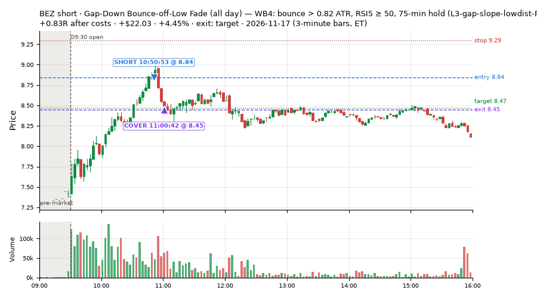
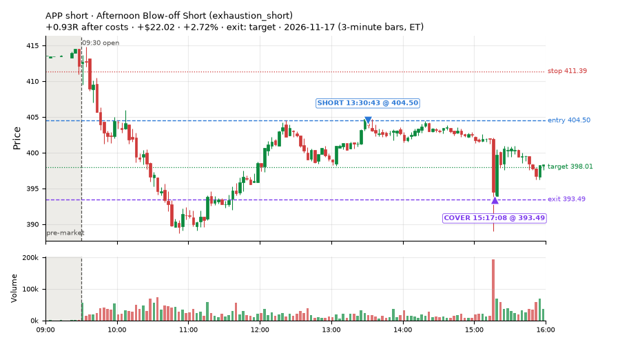
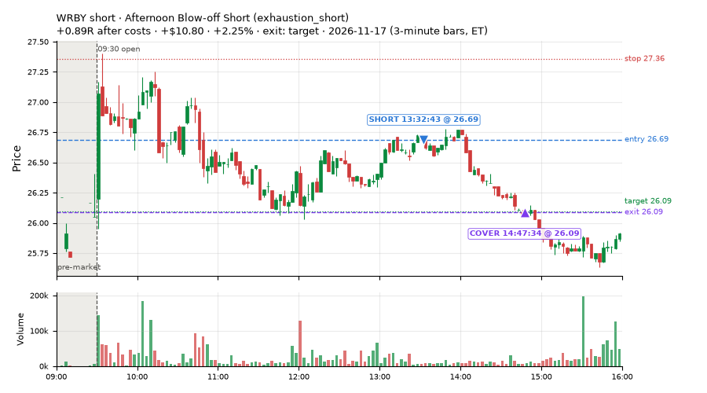
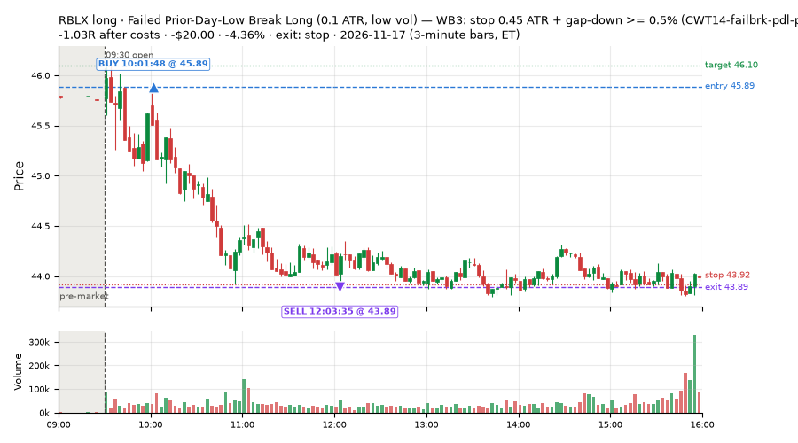
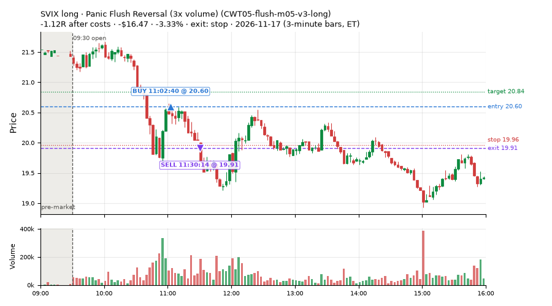
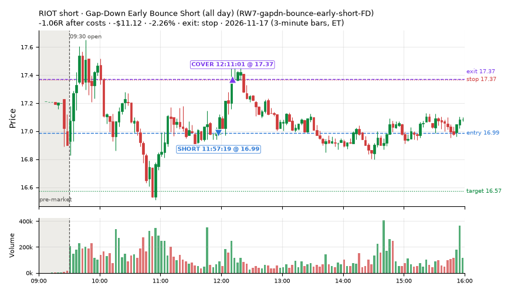
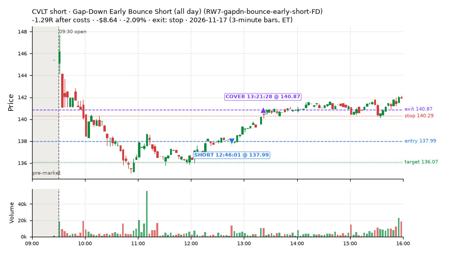
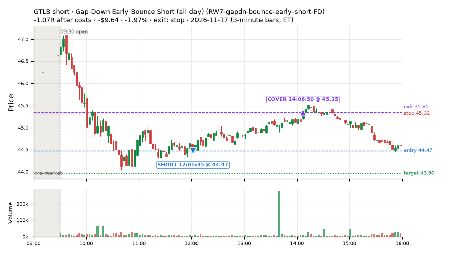

187 trades · win rate 53% · P/L $-11.54
PROBATION: no live setup has passed both locked test periods. 10 owner-directed setups added 2026-10-08 (MarcoFlow top 5 + 5 new), untested live. RW6G1 (RW6 + VWAP band guard) added 2026-10-09, probation.

| Symbol | Setup | Side | In | Out | Entry | Exit | Exit reason | % gained | P/L |
|---|---|---|---|---|---|---|---|---|---|
| BEZ | Gap-Down Bounce-off-Low Fade (all day) — WB4: bounce > 0.82 ATR, RSI5 ≥ 50, 75-min hold (L3-gap-slope-lowdist-FD-WB4) | short | 10:50 | 11:00 | 8.84 | 8.45 | target | +4.45% | $22.03 |
| APP | Afternoon Blow-off Short (exhaustion_short) | short | 13:30 | 15:17 | 404.50 | 393.49 | target | +2.72% | $22.02 |
| WRBY | Afternoon Blow-off Short (exhaustion_short) | short | 13:32 | 14:47 | 26.69 | 26.09 | target | +2.25% | $10.80 |
| Symbol | Setup | Side | In | Out | Entry | Exit | Exit reason | % lost | P/L |
|---|---|---|---|---|---|---|---|---|---|
| RBLX | CWT14-failbrk-pdl-p10-lowvol-long-WB3 | long | 10:01 | 12:03 | 45.89 | 43.89 | stop | -4.36% | $-20.00 |
| SVIX | CWT05-flush-m05-v3-long | long | 11:02 | 11:30 | 20.60 | 19.91 | stop | -3.33% | $-16.47 |
| RIOT | RW7-gapdn-bounce-early-short-FD | short | 11:57 | 12:11 | 16.99 | 17.37 | stop | -2.26% | $-11.12 |
| CVLT | RW7-gapdn-bounce-early-short-FD | short | 12:46 | 13:21 | 137.99 | 140.87 | stop | -2.09% | $-8.64 |
| GTLB | RW7-gapdn-bounce-early-short-FD | short | 12:01 | 14:06 | 44.47 | 45.35 | stop | -1.97% | $-9.64 |








Signal to fill: median 2s, 90th percentile 4s (187 trades). Bars close each minute; the order follows the bar close.
Best excursion (MFE): median 0.40R; worst (MAE) median 0.53R. 34% of trades never got +0.25R in our favour; 1 reached +1R and still closed at or below 0.
| Symbol | Setup | Best R | Worst R | Closed R |
|---|---|---|---|---|
| C | RW7-gapdn-bounce-early-short-FD | +2.39 | -1.05 | -1.22 |
| RY | RW7-gapdn-bounce-early-short-FD | +0.63 | -1.11 | -1.59 |
| MS | RW7-gapdn-bounce-early-short-FD | +0.89 | -1.01 | -1.26 |
| WCN | CWT05-flush-m05-v3-long | +0.55 | -1.15 | -1.27 |
| IJR | GEN-261020-06-VWAPxDn-Slope6lem0p011-BarsSinceHODge35-MID-BRoplt0p5-holdtr-long | +0.49 | -1.02 | -1.16 |
| Entry time | Trades | Win | Avg R | P/L |
|---|---|---|---|---|
| 09:50-10:30 | 14 | 50% | -0.06 | $-46.29 |
| 10:30-11:30 | 30 | 40% | -0.48 | $-71.97 |
| 11:30-13:00 | 82 | 55% | +0.02 | $-3.43 |
| 13:00-14:00 | 34 | 47% | -0.02 | $44.24 |
| 14:00-16:00 | 27 | 70% | +0.13 | $65.91 |
| Setup | Trades | Win | Avg R after costs | Adj R (net of SPY) | Avg R ex-market (all sessions) | P/L |
|---|---|---|---|---|---|---|
| Panic Flush Reversal (3x volume) (CWT05-flush-m05-v3-long) | 9.0 | 56% | -0.29 | -0.51 | -0.19 (beta +0.98, n 19) | $-21.68 |
| Failed Prior-Day-Low Break Long (0.1 ATR, low vol) — WB3: stop 0.45 ATR + gap-down >= 0.5% (CWT14-failbrk-pdl-p10-lowvol-long-WB3) | 26.0 | 19% | -0.76 | -0.42 | -0.32 (beta +0.94, n 26) | $-143.13 |
| Generated: PM Lower-Band Dip Buy (uptrend) (GEN-261019-02-BBpctle0p017-SMA20slopege0p46-PM-QQQdn-t05s1-long) | 1.0 | 100% | +0.25 | +0.22 | – | $1.80 |
| Generated: PM Buying-Surge Fade (extended) (GEN-261019-10-FlowShiftge0p42-SMA50dge1p7-PM-BRoplt0p5-t1s1-short) | 11.0 | 82% | +0.40 | +0.33 | +0.41 (beta +0.71, n 14) | $41.20 |
| Generated: Midday VWAP Loss Buy (fading) (GEN-261020-06-VWAPxDn-Slope6lem0p011-BarsSinceHODge35-MID-BRoplt0p5-holdtr-long) | 11.0 | 0% | -1.03 | -0.85 | -0.90 (beta +0.73, n 11) | $-46.55 |
| Generated: Late-AM Strong-Stock Dip Buy (GEN-261021-05-RSIslopelem14-ORHdistge0p42-LAM-BRvwlt0p3-t1s05-long) | 2.0 | 50% | -0.44 | -0.60 | – | $2.35 |
| Generated: Late New-High Short (QQQ down) (GEN-261022-03-NewHOD-Ret15mATRge0p12-SMA20dge0p59-LATE-QQQdn-t05s1-short) | 2.0 | 100% | +0.27 | +0.19 | – | $13.57 |
| Generated: PM New-Low Buy (failed breakout) (GEN-261022-06-NewLOD-ORBfailUp-BuyPresslem0p49-PM-SPYltm0p5-t1s1-long) | 12.0 | 42% | -0.27 | -0.37 | -0.22 (beta +1.22, n 20) | $-9.64 |
| Generated: Lunch Trend Buy (MACD rising) (GEN-261023-10-MACDhge0p12-VWAPcrossesle0-EMAdiffge0p16-LUNCH-BRvwlt0p4-hold-long) | 1.0 | 100% | -0.02 | +0.02 | – | $0.10 |
| Gap-Down Bounce-off-Low Fade (all day) — WB4: bounce > 0.82 ATR, RSI5 ≥ 50, 75-min hold (L3-gap-slope-lowdist-FD-WB4) | 1.0 | 100% | +0.83 | +0.90 | – | $22.03 |
| Early Sellers Above VWAP (MF1-945-flowsell-vwapup) owner-directed; holdouts once: Sep-Oct +0.169R n86, Apr-Jun -0.050R n429 | 1.0 | 100% | +2.02 | +1.53 | – | $3.74 |
| Gap-Down Early Bounce Short (all day) (RW7-gapdn-bounce-early-short-FD) | 100.0 | 61% | +0.15 | -0.10 | -0.06 (beta -0.98, n 148) | $62.40 |
| Afternoon Blow-off Short (exhaustion_short) failed Apr-Jun holdout: -0.020R/trade over 622 trades | 9.0 | 67% | +0.46 | +0.31 | -0.09 (beta -1.03, n 23) | $62.22 |
| Index Last-Half-Hour Momentum (intraday_momentum) failed Apr-Jun holdout: -0.091R/trade over 147 trades | 1.0 | 100% | -0.04 | -0.07 | -0.05 (beta -2.38, n 11) | $0.04 |
Market direction (SPY, beta 1) accounted for $32.98 of today's $-11.54; the rest ($-44.52) came from the setups themselves. Avg R net of SPY: -0.17 (incl. a hedge leg's cost; report only).
25 setups live today. Today: 332 signals, 187 taken, 4 lost because another setup held the symbol (1%). Since 2026-11-12 (4 sessions): 814 signals, 385 taken, 5 lost to other setups (1%). Peak open positions today 116 of 400 slots. Earnings blackout removed 329 symbols before scanning.
Simulated playing time (not live): 429 what-if trades of signals not taken, avg +0.04R, 57% winners; of them 5 lost to another setup (avg +0.11R).
Silent: IDX3-spy075-0955-3x-trail · Starved: MF1-945-flowsell-vwapup
| Prio | Setup | Today sig / taken | Sessions | Signals / taken / trades | Taken/day | Expected/day | Lost to other setups | Lost to (setup n) | Top skip reasons | SIMULATED: not-taken n / avg R / win | Verdict |
|---|---|---|---|---|---|---|---|---|---|---|---|
| 1 | Gap-Down Bounce-off-Low Fade (all day) — WB4: bounce > 0.82 ATR, RSI5 ≥ 50, 75-min hold L3-gap-slope-lowdist-FD-WB4 | 6 / 1 | 1 | 6 / 1 / 1 | 1.00 | – | 0 | – | not shortable / shorts off 4, spread / quote / size 1 | 5 / +0.50R / 80% | slow 5.0 entries/week; ~12 weeks to 60 trades |
| 2 | Failed Prior-Day-Low Break Long (0.1 ATR, low vol) — WB3: stop 0.45 ATR + gap-down >= 0.5% CWT14-failbrk-pdl-p10-lowvol-long-WB3 | 37 / 26 | 1 | 37 / 26 / 26 | 26.00 | – | 0 | – | spread / quote / size 9, other 2 | 11 / -0.16R / 64% | ok 130.0 entries/week |
| 3 | Gap-Down VWAP Loss Short (10% gap) — WB4: below open, real bounce, ADV 20M CWT09-gapdn-vwaploss-g10-short-WB4 | 0 / 0 | 1 | 0 / 0 / 0 | 0.00 | – | 0 | – | – | 0 / – | quiet - wait no signals in 1 session(s); too early to tell |
| 4 | Index Dip Bounce 3 3x S&P IDX3-spy075-0955-3x-trail | 0 / 0 | 4 | 0 / 0 / 0 | 0.00 | – | 0 | – | – | 0 / – | silent no signals in 4 session(s); no expected rate on file |
| 5 | * Oversold Slope Turn with Breadth Turning Up (near-miss) LD5-st2-breadthup-t05s1-long | 0 / 0 | 4 | 1 / 1 / 1 | 0.25 | – | 0 | – | – | 0 / – | slow 1.2 entries/week; ~48 weeks to 60 trades |
| 6 | Generated: Morning Overbought Coil Buy GEN-261029-05-BearDiv-RSI14ge78-Compress6le0p091-AM-BRopgt0p5-t05s05-long | 0 / 0 | 2 | 0 / 0 / 0 | 0.00 | – | 0 | – | – | 0 / – | quiet - wait no signals in 2 session(s); too early to tell |
| 7 | Generated: Late-AM Strong-Stock Dip Buy GEN-261021-05-RSIslopelem14-ORHdistge0p42-LAM-BRvwlt0p3-t1s05-long | 14 / 2 | 2 | 14 / 2 / 2 | 1.00 | – | 0 | – | other 10, spread / quote / size 2 | 12 / +0.25R / 50% | slow 5.0 entries/week; ~12 weeks to 60 trades |
| 8 | NS2 Short, SPY Up 0.5%, Not Friday (near-miss) NM-RWN4-ns2-spyup05-notfri-short | 0 / 0 | 4 | 105 / 32 / 32 | 8.00 | – | 0 | – | per-setup cap 54, spread / quote / size 14, not shortable / shorts off 4 | 73 / +0.34R / 90% | ok 40.0 entries/week |
| 9 | Quiet Downtrend Bounce Short (near-miss) NM-AMS-N1-quiet-morning-short | 0 / 0 | 4 | 4 / 4 / 4 | 1.00 | – | 0 | – | – | 0 / – | slow 5.0 entries/week; ~12 weeks to 60 trades |
| 10 | Generated: Open Range-Expansion Short GEN-261029-09-RangeExpge1p6-Since950ATRlem0p43-OPEN-BRvwgt0p5-hold-short | 0 / 0 | 2 | 0 / 0 / 0 | 0.00 | – | 0 | – | – | 0 / – | quiet - wait no signals in 2 session(s); too early to tell |
| 11 | Generated: Midday VWAP Loss Buy (fading) GEN-261020-06-VWAPxDn-Slope6lem0p011-BarsSinceHODge35-MID-BRoplt0p5-holdtr-long | 26 / 11 | 2 | 26 / 11 / 11 | 5.50 | – | 1 | RW7-gapdn-bounce-early-short-FD 1 | other 8, spread / quote / size 6, symbol held by another setup 1 | 15 / -0.94R / 0% | ok 27.5 entries/week |
| 12 | Generated: PM Lower-Band Dip Buy (uptrend) GEN-261019-02-BBpctle0p017-SMA20slopege0p46-PM-QQQdn-t05s1-long | 1 / 1 | 2 | 3 / 2 / 2 | 1.00 | – | 0 | – | other 1 | 1 / +0.42R / 100% | slow 5.0 entries/week; ~12 weeks to 60 trades |
| 13 | Generated: Lunch Trend Buy (MACD rising) GEN-261023-10-MACDhge0p12-VWAPcrossesle0-EMAdiffge0p16-LUNCH-BRvwlt0p4-hold-long | 1 / 1 | 2 | 5 / 3 / 3 | 1.50 | – | 0 | – | spread / quote / size 1, other 1 | 2 / -0.16R / 50% | slow 7.5 entries/week; ~8 weeks to 60 trades |
| 14 | Generated: PM New-Low Buy (failed breakout) GEN-261022-06-NewLOD-ORBfailUp-BuyPresslem0p49-PM-SPYltm0p5-t1s1-long | 17 / 12 | 2 | 25 / 20 / 20 | 10.00 | – | 1 | RW7-gapdn-bounce-early-short-FD 1 | other 4, symbol held by another setup 1 | 5 / -0.34R / 0% | ok 50.0 entries/week |
| 15 | Generated: Late Gap-Down Oversold Buy GEN-261028-04-ORBfailUp-RSI14le22-Gaplem1p2-LATE-BRvwgt0p5-holdtr-long | 0 / 0 | 2 | 0 / 0 / 0 | 0.00 | – | 0 | – | – | 0 / – | quiet - wait no signals in 2 session(s); too early to tell |
| 16 | Generated: Late New-High Short (QQQ down) GEN-261022-03-NewHOD-Ret15mATRge0p12-SMA20dge0p59-LATE-QQQdn-t05s1-short | 2 / 2 | 2 | 5 / 3 / 3 | 1.50 | – | 0 | – | not shortable / shorts off 2 | 2 / +0.48R / 100% | slow 7.5 entries/week; ~8 weeks to 60 trades |
| 17 | Generated: PM Prior-Low Bounce Short GEN-261022-10-EMAdChgge0p15-ORLdistge0p41-PDLdistle0p14-PM-BRoplt0p5-holdtr-short | 0 / 0 | 2 | 9 / 6 / 6 | 3.00 | – | 0 | – | spread / quote / size 3 | 3 / +0.33R / 100% | ok 15.0 entries/week |
| 18 | Generated: Lunch Failed Breakdown Buy GEN-261020-05-ORBfailDn-VWAPcrossesge4-SMA20dlem0p31-LUNCH-SPYgt0p25-holdtr-long | 0 / 0 | 4 | 79 / 37 / 37 | 9.25 | – | 0 | – | per-setup cap 30, other 7, spread / quote / size 5 | 42 / -0.50R / 14% | ok 46.2 entries/week |
| 19 | Generated: PM Buying-Surge Fade (extended) GEN-261019-10-FlowShiftge0p42-SMA50dge1p7-PM-BRoplt0p5-t1s1-short | 23 / 11 | 2 | 42 / 14 / 14 | 7.00 | – | 1 | GEN-261023-10-MACDhge0p12-VWAPcrossesle0-EMAdiffge0p16-LUNCH-BRvwlt0p4-hold-long 1 | not shortable / shorts off 15, spread / quote / size 8, other 4 | 28 / -0.18R / 39% | ok 35.0 entries/week |
| 20 | Early Sellers Above VWAP MF1-945-flowsell-vwapup | 2 / 1 | 4 | 24 / 4 / 4 | 1.00 | 5.33 | 0 | – | spread / quote / size 17, other 2, not shortable / shorts off 1 | 20 / +0.44R / 50% | starved 1.00 entries/day vs ~5.33 expected |
| 21 | Afternoon VWAP Reclaim Fade (all day) NS4-pm-vwap-reclaim-oversold-short-FD | 1 / 0 | 4 | 31 / 18 / 18 | 4.50 | 3.57 | 0 | – | not shortable / shorts off 5, other 5, spread / quote / size 3 | 13 / -0.48R / 31% | ok 22.5 entries/week |
| 22 | Panic Flush Reversal (3x volume) CWT05-flush-m05-v3-long | 22 / 9 | 4 | 42 / 19 / 19 | 4.75 | – | 0 | – | other 12, spread / quote / size 8, broker rejected 2 | 23 / +0.18R / 78% | ok 23.8 entries/week |
| 23 | Afternoon Blow-off Short exhaustion_short | 17 / 9 | 4 | 52 / 23 / 23 | 5.75 | 12.12 | 0 | – | not shortable / shorts off 22, other 5, spread / quote / size 2 | 29 / -0.10R / 38% | ok 28.8 entries/week |
| 24 | Index Last-Half-Hour Momentum intraday_momentum | 1 / 1 | 4 | 11 / 11 / 11 | 2.75 | 2.37 | 0 | – | – | 0 / – | slow 13.8 entries/week; ~4 weeks to 60 trades |
| 25 | Gap-Down Early Bounce Short (all day) RW7-gapdn-bounce-early-short-FD | 162 / 100 | 2 | 293 / 148 / 148 | 74.00 | 59.92 | 2 | CWT05-flush-m05-v3-long 1, CWT14-failbrk-pdl-p10-lowvol-long-WB3 1 | per-setup cap 59, spread / quote / size 35, other 29 | 145 / +0.19R / 65% | ok 370.0 entries/week |
Every trade is attached as a CSV you can open and edit in Excel or Google Sheets. Live page: https://misiti15.github.io/MCF/live/